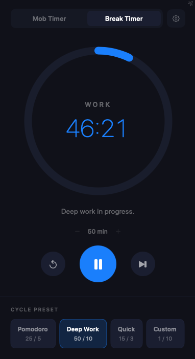

Start focusing today.
Free. Native. No sign-up required. Just download and run.
Download Mob Timer for macOSMob Timer's Break Timer keeps your work sessions structured. Pick a cycle preset — Pomodoro, Deep Work, or your own custom rhythm — and let the app handle the rest. A gentle ring tracks your progress so you stay in the zone without watching the clock.

Free. Native. No sign-up required. Just download and run.
Download Mob Timer for macOS